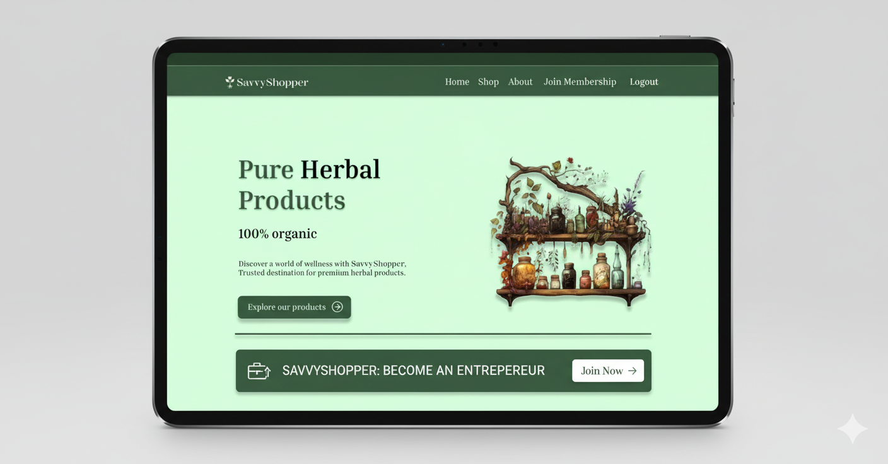

Homepage
Follows a clear hierarchy: hero message → value proposition → browsable categories → best-selling products — designed to build trust before asking the user to browse deeper.
Herbal & Ayurvedic E-Commerce — Design + Systems Architecture

SOLO PROJECT · UI/UX DESIGN + SYSTEMS ANALYSIS
THE DESIGN
Before any systems architecture, this project started as a UI/UX design exercise — building a herbal wellness brand from scratch: identity, layout, and user flow.
A calming sage-green palette paired with a hand-illustrated meditating mascot, used consistently across every screen to reinforce the "wellness and nature" positioning.
Follows a clear hierarchy: hero message → value proposition → browsable categories → best-selling products — designed to build trust before asking the user to browse deeper.
Each product is listed with name, price, a short description, and quick actions (Buy Now / Add to Cart / Wishlist) — built to support fast browsing decisions.
A simple, distraction-free entry point — minimal fields and a clear call to action, with the brand mascot keeping things feeling warm even on a functional screen.
Mirrors the login screen's structure for consistency, keeping the form short to reduce friction for new users.
This was my first full UI/UX project, and revisiting it taught me a lot about the details that actually matter:
Sharing this honestly because it's part of how I got better — not despite the early mistakes, but because of catching and fixing them.
PROJECT OVERVIEW
SavvyShopper is a comprehensive herbal and Ayurvedic e-commerce platform designed to provide eco-friendly, indigenous products to a broad consumer base. It began with a range of 18 products and has expanded into categories including health & nutrition, skincare, personal care, home care, baby care, agriculture, veterinary, and food products.
The proposed system elevates SavvyShopper from a simple marketing website into a fully intelligent, data-driven shopping platform that integrates price comparison, personalization, and deal intelligence.
Beyond the UI, this project also required me to think like a systems analyst — defining the backend logic, data structure, and business case that would make this design actually work as a product. The sections below cover that analysis in full.
BACKGROUND & PROBLEM DEFINITION
SavvyShopper was founded with a mission to make herbal and Ayurvedic products accessible at scale while preserving the country's natural resources. The platform's product lineup includes:
Conflicting messaging across channels led to brand confusion. Teams operated without coordinated communication strategies.
Narrow marketing channels and campaigns failing to generate meaningful interactions with target users.
Budgets allocated without data-driven insights, leading to poor ROI and missed market opportunities.
No robust infrastructure to measure campaign performance or track user behavior effectively.
Platform relied on traditional approaches misaligned with modern digital commerce expectations.
PROPOSED SYSTEM
Personalized homepage dashboard; Advanced search & filters; Price comparison view; Shopping cart & wishlist; User reviews & ratings; Coupons & promo codes
Price tracker with history; Real-time deal alerts; Aggregated product reviews
Centralized product database; Data aggregation engine; User accounts & profiles
Retailer APIs (Amazon, eBay, Walmart); Payment gateway integration
Browser extension; Social sharing & credits; Premium subscription tier
SSL encryption; User data control settings; Secure payment gateways
Affiliate marketing commissions; Premium subscriptions; Sponsored listings
Referral program with incentives; Instagram, Twitter, TikTok presence
ADVANTAGES OF THE PROPOSED SYSTEM
| Advantage | Description |
|---|---|
| Personalized Experience | Tailored recommendations and custom price alerts based on user history |
| Cost Savings | Real-time price comparison and aggregated coupon access across retailers |
| Convenience | Centralized shopping hub with advanced search filters |
| Data-Driven Decisions | Historical price trends and aggregated user reviews from multiple platforms |
| Seamless Integration | Live API data from multiple retailers updated in real time |
| Enhanced Engagement | Loyalty programs and social sharing incentives for repeat use |
| Revenue Generation | Affiliate commissions, subscriptions, and sponsored listings |
| Competitive Advantage | First-mover as a comprehensive herbal + smart-shopping platform |
SCOPE OF THE PROJECT
THEORETICAL BACKGROUND
Theory of Planned Behavior for friction reduction; Technology Acceptance Model (TAM) for adoption.
Conversion rate optimization; SEO and retention marketing; Trust & personalization principles.
Collaborative filtering; Content-based filtering; Price prediction models; NLP sentiment analysis on reviews.
Nudge theory (countdown timers, stock alerts); Price anchoring (original vs. sale price); Scarcity & social proof signals.
Price elasticity demand models; Dynamic pricing based on demand & competition.
Social shopping and trusted recommendations; Network effects from growing review base.
SYSTEM ANALYSIS
Interviews, document review, data/process modeling and DFD creation.
Solution planning based on SRS; ER diagrams, structure charts, and flow diagrams.
Implementation using Visual Studio as IDE and MySQL as the database engine.
Quality assurance via test case development; bug detection across all phases.
Post-delivery defect resolution and feature enhancements as required.
| Feasibility Type | Assessment | Outcome |
|---|---|---|
| Technical | Visual Studio + MySQL environment already available at organization | Feasible |
| Operational | System is intuitive; no deep technical knowledge required to operate | Feasible |
| Economical | Software and hardware already at client side; minimal additional cost | Feasible |
| Behavioral | Minimal training required; minor resistance expected but manageable | Feasible |
USER REQUIREMENTS
| Category | Requirements |
|---|---|
| User Account | Registration via email/social/phone; MFA; profile customization; wishlists |
| Product Search | Keyword/category/brand search; advanced filters; real-time price comparison |
| Price Tracking | Price fluctuation monitoring; desired price point setting per product |
| Deal Alerts | Push, email, or in-app notifications for sales and price drops |
| Discounts | Aggregated promo codes; exclusive flash-sale alerts for loyal users |
| Recommendations | Cross-sell and upsell suggestions based on user selections |
| Product Reviews | Read and aggregate reviews from multiple e-commerce platforms |
| Retailer Info | Trusted retailer details, delivery info, and return policies |
| Mobile/Responsive | iOS and Android app; responsive web design for all devices |
| Payments | Multiple secure payment options; SSL encryption; auto-fill checkout |
| Communication | Personalized email updates; referral program with incentives |
| Analytics | User behavior tracking; real-time platform performance monitoring |
SYSTEM DESIGN
| Column | Data Type | Description |
|---|---|---|
| `customer_id` | INT | Primary key |
| `first_name` | VARCHAR | Customer's first name |
| `last_name` | VARCHAR | Customer's last name |
| `email` | VARCHAR | Contact email address |
| `phone` | VARCHAR | Phone number |
| `address` | TEXT | Shipping address |
| Column | Data Type | Description |
|---|---|---|
| `product_id` | INT | Primary key |
| `name` | VARCHAR | Product name |
| `description` | TEXT | Full product description |
| `price` | DECIMAL | Unit price |
| `image` | VARCHAR | Image URL or file path |
| `quantity_in_stock` | INT | Available inventory |
| Column | Data Type | Description |
|---|---|---|
| `order_id` | INT | Primary key |
| `customer_id` | INT | FK → Customer table |
| `order_date` | TIMESTAMP | Date and time of order |
| `total_amount` | DECIMAL | Total order value |
| `shipping_address` | TEXT | Delivery address |
| `billing_address` | TEXT | Billing address |
| Column | Data Type | Description |
|---|---|---|
| `order_item_id` | INT | Primary key |
| `order_id` | INT | FK → Order table |
| `product_id` | INT | FK → Product table |
| `quantity` | INT | Units ordered |
| `unit_price` | DECIMAL | Price per unit at time of order |
| Column | Data Type | Description |
|---|---|---|
| `tier_id` | INT | Primary key |
| `tier_name` | VARCHAR | Tier name (e.g., Silver, Gold) |
| `discount_percentage` | DECIMAL | Applicable discount for tier |
| Event | Trigger | Activity | Response |
|---|---|---|---|
| Event ID | Unique identifier per event | Event classification | Event number assigned |
| Event Type | Order placed, discount applied | Filtering and analysis | Changes and placements |
| Customer ID | — | Links event to customer | Customer table update |
| Order ID | Links to order record | Order placement | Order table update |
| Member Discount | Member login | Percentage/discounts applied | Product view |
| Discount Unavailable | Member login | Product view | Cart page redirect |
| Discount Updated | Promotion update | Different level check | Membership level change |
| Discount Claimed | Checkout | — | Cart page |
| Layer | Technology |
|---|---|
| Frontend IDE | Visual Studio |
| Database | MySQL |
| Architecture | Client-Server |
| Methodology | Waterfall SDLC |
KEY OUTCOMES & INSIGHTS
SavvyShopper successfully maps its herbal product ecosystem to a scalable e-commerce architecture capable of handling multi-category inventory, tiered memberships, and third-party retail integrations.
By embedding machine learning — price prediction, collaborative filtering, NLP sentiment analysis — the platform moves beyond passive product listing into proactive consumer guidance.
The use of nudge theory, price anchoring, scarcity cues, and social proof transforms the platform into a psychologically-aware shopping tool that drives measurable conversion improvements.
The combination of affiliate marketing, premium subscriptions, and sponsored listings creates multiple revenue streams, reducing dependency on any single monetization channel.
The modular architecture — separate UI, backend, API integration, and analytics layers — ensures that each component can be scaled or upgraded independently as the user base grows.
CONCLUSION
The SavvyShopper project presents a well-rounded case study in transforming a basic product marketing website into a comprehensive, intelligent shopping platform. Grounded in consumer behavior theory, machine learning, and behavioral economics, the proposed system addresses real gaps in the existing infrastructure while delivering clear value to end users — through personalization, cost savings, and transparency — and to the business — through diversified revenue, data-driven marketing, and scalable architecture.
The use of the Waterfall model provides structure and traceability across all phases, making it an appropriate choice for a project with well-defined requirements. The completeness of the design artifacts — ER diagrams, data flow diagrams, structure charts, event tables, and a data dictionary — demonstrates thorough analytical rigor and readiness for implementation.
This project taught me that good design isn't just visual — it's connected to a system that has to actually function. That dual lens — how something looks and feels, and how it's built and structured — is exactly the kind of thinking I now bring to every project, design or development.
CASE STUDY
SavvyShopper · UI/UX Design + Systems Case Study